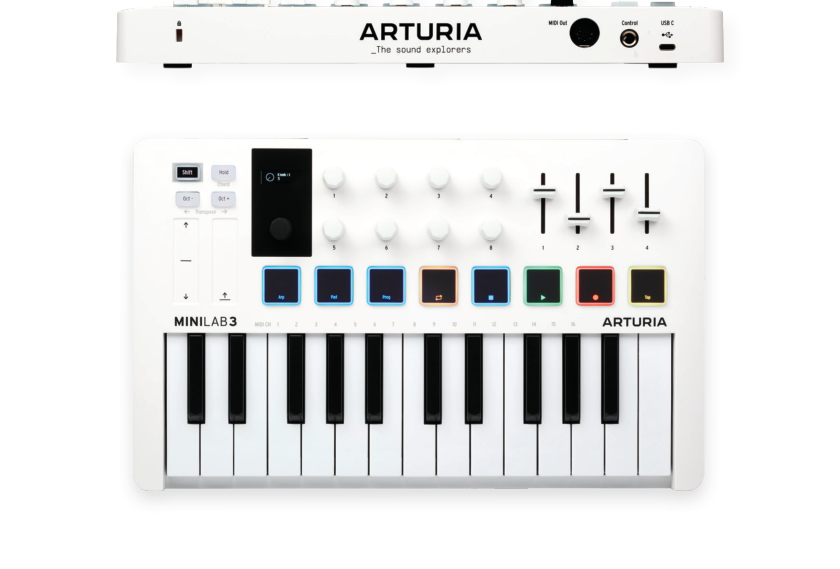
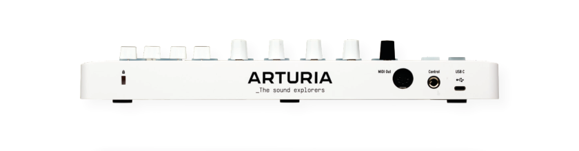

Tổng quan
Tài liệu này giới thiệu script tích hợp (integration script) đưa MiniLab 3 vào làm việc sâu bên trong Ableton Live: encoder chính điều hướng scene/timeline, pad kích hoạt clip theo đúng màu, núm và fader tự ánh xạ vào device đang arm — thay vì chỉ là một bàn phím MIDI thông thường.

Script hoạt động với Ableton Live 11.2.5 trở lên — kể cả bản Live Lite đi kèm MiniLab 3, vì Ableton đã đưa script trực tiếp vào chương trình (không cần cài file zip tay như các DAW khác).


1. Cài đặt trong Live
Bạn cần phiên bản Live mới nhất để dùng script tích hợp cho MiniLab 3 (Live 11.2.5+ đã có sẵn script; Live Lite cập nhật qua Ableton Account cũng nhận). Các bước:
- Kết nối MiniLab 3 với máy tính và chuyển sang chương trình DAW: giữ Shift + bấm Pad 3 cho tới khi màn hình hiển thị DAW.
- Mở Ableton Live.
- MiniLab 3 sẽ được tự động nhận diện và sẵn sàng sử dụng.
Nếu MiniLab 3 không được tự nhận:
- Vào thiết lập MIDI của Live: Options → Preferences → tab Link/Tempo/MIDI.
- Trong mục MIDI, chọn Control Surface là
MiniLab 3. - Đặt đúng cổng Input và Output:
MiniLab 3 MIDI/MiniLab 3 MIDI.

MiniLab 3 và 2 cổng MiniLab 3 MIDI- Chắc chắn rằng bạn đã tắt ba cổng
MiniLab 3 DIN THRU,MiniLab 3 MCUvàMiniLab 3 ALV(cả phần Input lẫn Output). - Sau đó MiniLab 3 sẽ được nhận diện và sẵn sàng cho Live.

MiniLab 3 MIDI bậtVì sao phải tắt 3 cổng kia? Chế độ DAW tùy chỉnh của MiniLab 3 (script Live) và giao thức Mackie Control Universal chạy trên cổng MCU sẽ xung đột nếu bật cùng lúc. Cổng DIN THRU và ALV dành cho mục đích khác (MIDI thru phần cứng và liên lạc với Analog Lab).
Xem thêm chương 6 — Điều khiển DAW trong cẩm nang chính.
2. Bản đồ điều khiển nhanh
Toàn bộ những gì script làm được với Live, gói gọn trong một bảng — chi tiết từng khu vực ở các mục sau:
| Trên MiniLab 3 | Khu vực Live | Chức năng |
|---|---|---|
| Encoder chính — xoay | Session View | Chọn scene (di chuyển lựa chọn lên/xuống) |
| Encoder chính — nhấn | Session View | Kích hoạt (launch) cả scene đang chọn |
| Pad 1–8 · Bank A | Session View | Kích hoạt clip — LED khớp màu clip/scene |
| Encoder chính — xoay | Arrangement View | Di chuyển vị trí phát (playhead) trên timeline |
| Encoder chính — nhấn | Arrangement View | Phát từ vị trí đang chọn |
| Shift + Encoder chính — xoay | Track | Chuyển track (lựa chọn track trước/sau) |
| Shift + Encoder chính — nhấn | Track | Arm (bật thu) track đang chọn — OLED hiện biểu tượng arm |
| Núm 1–8 | Device | Điều khiển tham số của device trên track đang arm — OLED hiện tên + giá trị |
| Fader 1–4 | Mixer | Âm lượng track, Send A/B, Pan |
| Pad 1–8 · Bank B | Drum Rack | Chơi trống/âm thanh — duyệt bộ sound bằng encoder chính |
| Shift + Pad 4–8 | Transport | Loop · Play/Pause · Stop · Record · Tap Tempo |
| Shift + Pad 3 → Arturia | Analog Lab | Chuyển sang điều khiển plug-in Analog Lab như đang standalone |
3. Chức năng theo từng khu vực của Live
3.1. Session View — chạy clip & scene
Session View là nơi Live trở nên “phòng thu trực tiếp”, và script được thiết kế xoay quanh nó đầu tiên:
- Chọn scene: xoay encoder chính — lựa chọn scene di chuyển lên/xuống; nội dung hiển thị trên màn hình OLED của MiniLab 3.
- Chạy cả scene: nhấn encoder chính — toàn bộ clip trong scene đang chọn phát cùng lúc.
- Chạy từng clip: 8 pad (bank A) kích hoạt clip trực tiếp trong Session view.

Phản hồi bằng màu: LED của pad Bank A sẽ trùng màu với clip/scene đang chọn trong Live — bạn nhìn xuống tay là biết ngay clip nào sắp phát, không cần nhìn màn hình máy tính.
Chuyển giữa 2 bank pad bằng cách vào Pad Mode: giữ Shift + bấm Pad 2.
3.2. Arrangement View — thu & dựng bài
Khi bạn làm việc ở Arrangement view (dạng timeline nhiều track), encoder chính tự đổi vai trò:
- Xoay encoder chính: di chuyển vị trí phát (playhead) dọc theo timeline — như cuộn/bină kéo tay.
- Nhấn encoder chính: phát từ vị trí đang chọn.
- Thu bài: bật Record qua transport (Shift + Pad đỏ, xem mục 3.6) rồi chơi trên bàn phím — track đang arm sẽ nhận MIDI.
3.3. Track & Mixer
- Chuyển track: giữ Shift + xoay encoder chính — lựa chọn track di chuyển; OLED hiển thị tên track.
- Arm track: giữ Shift + nhấn encoder chính — track đang chọn được arm (bật thu); biểu tượng arm hiện trên OLED để xác nhận.
Bốn fader điều khiển trực tiếp bộ trộn (mixer) của track đang chọn:
| Fader | Tham số mixer của Live |
|---|---|
| 1 | Volume (âm lượng track) |
| 2 | Send A (gửi sang return track A) |
| 3 | Send B (gửi sang return track B) |
| 4 | Pan (cân trái/phải) |
Cả fader lẫn núm đều có phản hồi trên OLED: tên tham số và giá trị hiển thị ngay khi bạn chạm vào — chỉnh mù cũng không lo lệch.
3.4. Device — nhạc cụ & hiệu ứng
Tám núm encoder 1–8 điều khiển tham số của device nằm trên track đang arm (nhạc cụ hay hiệu ứng đều được):
- Chọn track bằng Shift + encoder (mục trên) → núm 1–8 tự ánh xạ vào 8 tham số đầu của device đó.
- Xoay núm là nghe thấy ngay; OLED hiển thị tên tham số và giá trị đang đặt.
Cặp bài trúng phổ biến: arm track chứa Drum Rack hoặc một nhạc cụ của V Collection trong Live, rồi dùng núm 1–8 như các núm macro của device đó.
3.5. Drum Rack — chơi trống (Bank B)
Chuyển sang Bank B (Shift + Pad 2), 8 pad biến thành bộ trống:
- Bấm pad phát âm thanh — plug-in Drum Machine (Drum Rack) của Live đã được ánh xạ sẵn.
- Duyệt bộ sound: xoay encoder chính để chọn sound trong Drum Rack.
- Phản hồi: LED của pad khớp với màu bạn đã gán cho từng sound trong plug-in.

3.6. Transport & tempo

Giữ Shift, Pad 4–8 điều khiển transport của Live:
| Pad | Chức năng Live | Phản hồi |
|---|---|---|
| Pad cam (4) | Loop — bật/tắt vòng lặp | — |
| Pad xanh lá (5) | Play/Pause | Nhấp nháy khi đang phát |
| Pad trắng (6) | Stop | — |
| Pad đỏ (7) | Record | Nhấp nháy khi đang ghi |
| Pad trắng (8) | Tap Tempo — gõ phách đặt tốc độ | — |
4. Chế độ Analog Lab
Nếu bạn đang dùng Analog Lab, hãy chắc chắn link đúng thiết bị khi mở plug-in lần đầu:

Tiếp theo, vào chế độ Analog Lab trên MiniLab 3 (giữ Shift + Pad 3 để quay về chương trình Arturia) để có quyền kiểm soát hoàn hảo Analog Lab. Khi Analog Lab được chọn, bạn thao tác với plug-in y như khi chạy standalone: điều hướng, chọn preset và chỉnh FX trực tiếp từ MiniLab 3.
5. Ngoài script: MIDI Map tay
Script bao phủ các chức năng chính nêu trên — nhưng Live có hàng trăm tham số khác (solo track, bật/tắt device, quantization,自动化 v.v.) mà script không có ánh xạ sẵn. Tin tốt: MiniLab 3 vẫn đồng thời hiện như một MIDI controller thông thường (cổng MiniLab 3 MIDI), nên bạn có thể gán tay bất kỳ tham số nào:
- Trong Preferences → Link/Tempo/MIDI, bật Remote cho cổng vào
MiniLab 3 MIDI. - Bấm MIDI ở góc trên phải Live (chế độ MIDI Map, phím tắt Ctrl/Cmd + M) — mọi tham số gán được sẽ sáng lên.
- Nhấp vào tham số muốn điều khiển (ví dụ nút Solo của một track), rồi xoay/chạm điều khiển tương ứng trên MiniLab 3.
- Bấm MIDI lần nữa để thoát. Bản map được lưu cùng project.
Cách này dùng được trên cả Live Lite, và là cầu nối hoàn hảo khi bạn muốn những thứ script chưa có: solo, mute, mở/đóng device, bật metronome, đổi scene bằng phím…
6. Live Lite & khắc phục lỗi
Dùng Live Lite (bản đi kèm MiniLab 3): cập nhật Live Lite lên bản mới nhất trong Ableton Account — từ Live 11.2.5, script MiniLab 3 đã nằm sẵn trong chương trình, không cần tải file zip như Bitwig/Cubase. Các bước cài đặt ở mục 1 áp dụng nguyên xi.
Firmware 1.1 trở lên: MiniLab 3 có thêm bank Transport riêng cho Live — bấm transport không cần giữ Shift nữa. Cập nhật firmware qua MIDI Control Center (xem chương 2 — Cài đặt trong cẩm nang chính).
Script không nhận, thử theo thứ tự: ① Kiểm tra MiniLab 3 đang ở chế độ DAW (Shift + Pad 3). ② Cập nhật Live/Live Lite lên mới nhất. ③ Trong Preferences → Link/Tempo/MIDI: Control Surface = MiniLab 3, In/Out = MiniLab 3 MIDI, và tắt 3 cổng DIN THRU / MCU / ALV. ④ Vẫn lỗi? Xem bài hỗ trợ chính thức của Arturia hoặc thread MiniLab 3 & Ableton Live trên forum Arturia.
🎵 Video gợi ý: MiniLab 3 — How To Control Ableton Live (Arturia), live looping trong Ableton với MiniLab 3, và bài review + tutorial của loopop. Muốn đọc thêm về chính Live? Xem Ableton Live Manual tiếng Việt trong thư viện.